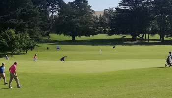

2 Cabañas - Abierto todo el año - Atendida por sus dueños

2 Cabañas - Abierto todo el año - Atendida por sus dueños
Un paisaje serrano y un espejo de agua ideal para estar en contacto con la naturaleza: el deporte y la gastronimia basada en productos regionales es una de las claves para escaparse de la ciudada y disfrutar del mejor paisaje.

Una caminata que termina en un picnic al atardecer, un día de pesca embarcado o una clase de windsurf. Si la idea es hacer algo distinto, la laguna es la clave. El Complejo Recreativo Islas Malvinas (CRIM) ofrece el servicio de alquiler de embarcaciones y de todo lo necesario para hacer remo, canotaje y windsurf. La pesca recreativa es otro de los deportes elegidos: puede ser desde la orilla o embarcado y se pescan buenas piezas de pejerrey. La laguna también invita a hacer una larga caminata bordeando el espejo de agua o a recorrerla en bicicleta. Por supuesto, unos mates a la orilla se convierten en un excelente plan para cerrar el día. Para aquellos que deseen conocer los orígenes de Mar del Plata, hay dos propuestas: la Reducción del Pilar, réplica del primer asentamiento jesuita de la zona. Y el Museo Municipal José Hernández, un antiguo casco de Estancia donde se recrea, a través de imágenes, objetos y documentos la historia rural regional, la vida de campo y sus costumbres. El museo lleva el nombre del autor del “Martín Fierro”, ya que en esta estancia pasó unos años de su juventud.
En el ingreso, entre valles y lomadas, te reciben los distintos restaurantes, parrillas, campings, venta de productos regionales -como miel, quesos, embutidos, mermeladas- y muchos puestos de venta de frutas y verduras recién extraídas de las quintas de los alrededores, que forman parte del Cordón Frutihortícola de General Pueyrredon. Retomando la RN 226, se entra a la altura del kilómetro 16, hacia mano izquierda. Una vez que se llega al arco de ingreso al barrio, se puede recorrer uno de los pintorescos centros comerciales y gastronómicos, ideal para comprar artesanías o degustar las especialidades de la región. Y aunque la gastronomía es uno de los fuertes de Sierra de los Padres, el otro atractivo es el Golf. El Sierra de los Padres Golf Club es un campo de golf con 18 hoyos y en un predio de 40 hectáreas. Estas canchas son un desafío para el jugador ya que al haber sido construidas en las estribaciones de la sierra, sus fairways son angostos, bordeados por exuberante forestación y casi siempre en plano inclinado.
Allí también se encuentra La Gruta de los Pañuelos, uno de los puntos más visitados de Sierra de los Padres. El plan es visitar el paseo de los artesanos, y caminar por las rocas hasta encontrar la imagen de la Virgen de Luján a la que se le dejan pañuelos a modo de agradecimiento. También muy cerca de allí está el Paseo de la Cumbre, un centro comercial con restaurantes, cafés, y tiendas para comprar productos típicos. En este lugar también hay pasarelas que permiten observar la espectacular vista de los campos sembrados mientras se disfruta de la mejor gastronomía.
Un dato: aunque muchos eligen Sierra de los Padres para pasar el día (hay piletas de natación, juegos infantiles, fogones, canchas para realizar deportes, laberintos naturales, muro de escalada, arquería y hasta un metegol humano), el lugar cuenta con hoteles, cabañas y campings que están abiertos durante todo el año. Para quienes alguna vez se preguntaron qué se siente volar, los vuelos de bautismo en parapente sobre las sierras les van a dar la respuesta. Sin necesidad de conocimientos previos es posible hacerlo junto a instructores, de manera cómoda y segura. Para mayor información acerca de Sierra y Laguna de los Padres ingresar en :
www.turismomardelplata.gob.ar